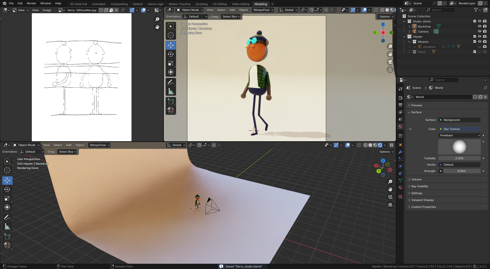
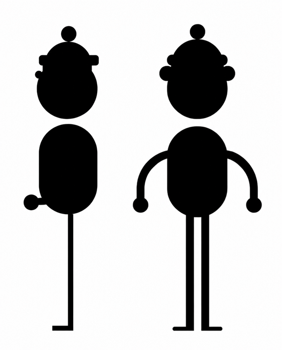
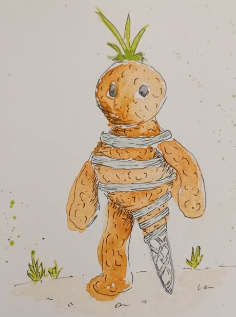
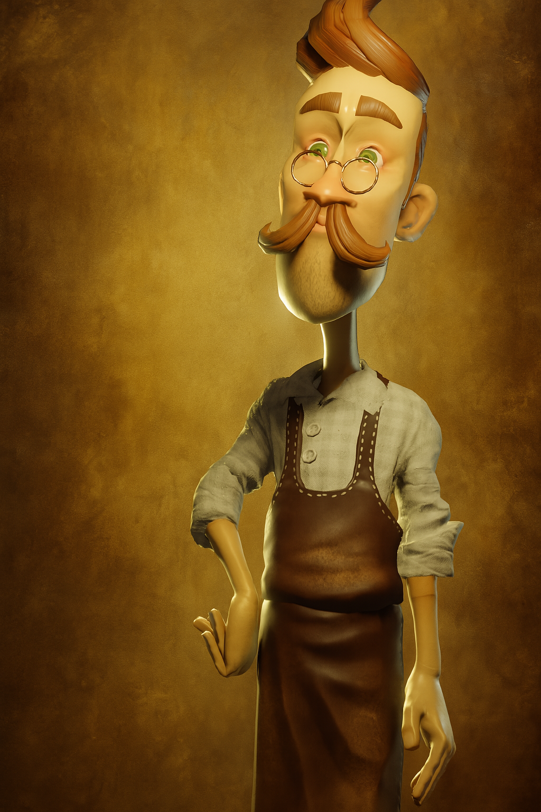
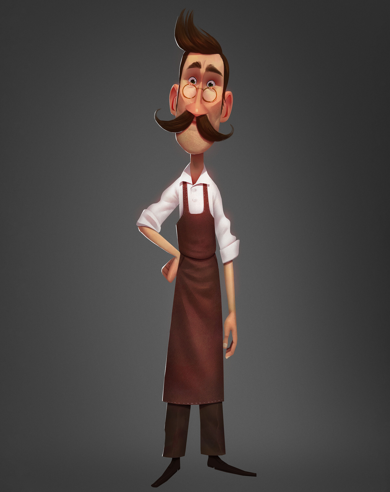
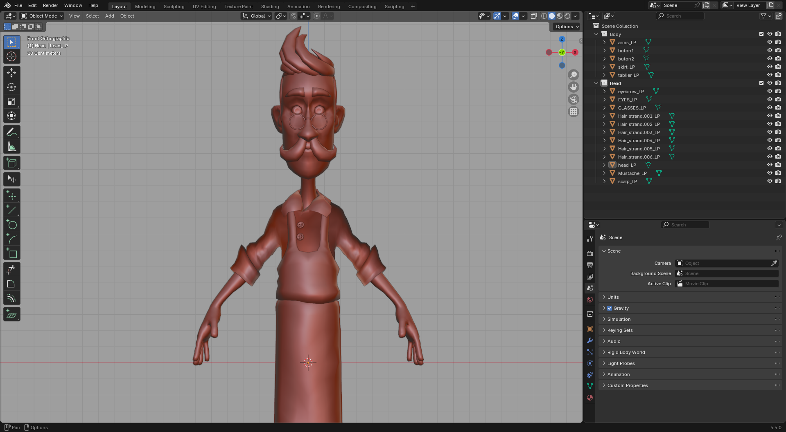
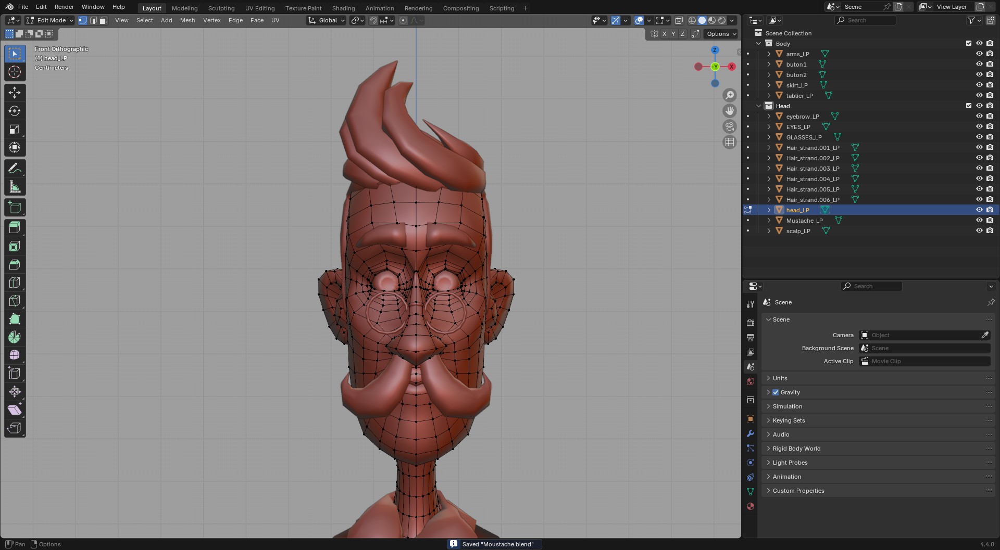

Gerry
Stylised character inspired by the character design of Robin Davey for his Sprinklr project, during a course on the theory and symbolism of elementary geometric forms


Experiments in character design, either personal or produced as part of the Bachelor’s degree in MMI
Stylised character inspired by the character design of Robin Davey for his Sprinklr project, during a course on the theory and symbolism of elementary geometric forms


Cal’s silhouette combines rounded, compact shapes to suggest both softness and stability. His textured earth body recalls rammed earth and bio-based materials, while the woven PLA elements visible on his leg and around his body suggest a fragile yet deliberate repair. The plant shoots emerging from his head symbolise the ability of living things to keep growing despite cracks and the wear of time.
Cal is a small creature made of rammed earth, plant fibres and PLA-printed support structures. He lives discreetly in the walls and warm corners of the GCCD building, where he silently helps preserve the warmth and balance of the place. His fragile body cracks over time. To keep walking without collapsing, he repairs parts of his body himself with a light woven structure that recalls manual additive fabrication.
Shy and highly observant, Cal avoids noisy places and prefers to act unseen. He moves through the building at night and places small thermal fragments in cracks and cold corners in order to gently return warmth. When the Esperits take good care of their building, the plant shoots on his head slowly grow. But when spaces are neglected or mistreated, his body becomes drier and his cracks reappear.

Creation of a 3D character design inspired by concept art by Rayner Alencar. The project was produced during a training course with Pierrick Picaut.



